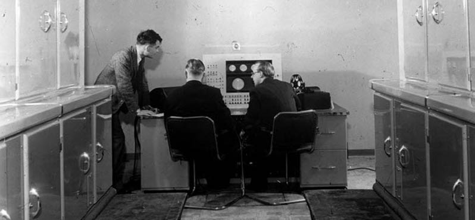

Alan Turing at the console of the Manchester Mark I computer, c. 1951
(Source: Alan Turing: His Work and Impact, p. 873)
History of Alan Turing's life:
1912 - Born in London, England.
1922 - Turing was educated at Hazelhurst Preparatory School, an
independent school in the village of Frant in Sussex.
1926 - At the age of 13, he went on to Sherborne School, a
boarding independent school in the market town of Sherborne in Dorset.
1928 - Encountered Albert Einstein's work, and not only did he
grasp it, but it is possible that he managed to deduce Einstein's
questioning of Newton's laws of motion.
1934 - Turing graduate at King's College, Cambridge, where he
was awarded first-class honours in mathematics.
1935 - at the age of 22, he was elected a Fellow of King's
College on the strength of a dissertation in which he proved the
central limit theorem.
1936 - Won a Smith's Prize and published his paper "On
Computable Numbers, with an Application to the Entscheidungsproblem".
1938 - He obtained his PhD from the Department of Mathematics
at Princeton with his dissertation, Systems of Logic Based on
Ordinals.
1939 - Solved the essential part of the naval indicator system,
which was more complex than the indicator systems used by the other
services.
1941 - Get engaged with Joan Clarke.
1942 - Turing travelled to the USA and worked with US Navy
cryptanalysts on the naval Enigma and bombe construction in
Washington.
1945 - Moved to Hampton, London, while he worked on the design
of the ACE.
1946 - Was appointed an Officer of the Order of the British
Empire (OBE) by King George VI for his wartime services.
1947 - Returned to Cambridge for a sabbatical year.
1948 - Joined Max Newman's Computing Machine Laboratory, at the
Victoria University of Manchester.
1950 - Complete the chess program for a computer that did not
yet exist.
1951 - Elected a Fellow of the Royal Society (FRS).
1952 - Was prosecuted for homosexual acts.
1954 - Dies at the age of 41 from cyanide poisoning.
"I believe that sometimes they are like people that nobody expects
anything they do as things that nobody can imagine."
- Alan Turing
If you have time, you should read more about this incredible human being
on his
Wikipedia entry.